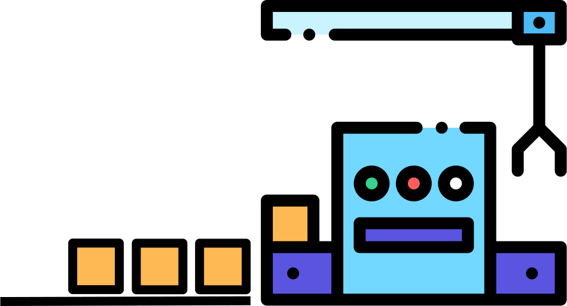

Other (academic) paradigms/formalisms: Petri Nets, DEVS*, ...
What is a Discrete Dynamic System (DDS)?
A real world system consisting of objects and a discrete non-deterministic flow of events in time
such that at any moment in time, the system's past is a sequence of situations each characterized by
a time point t (the situation time)
the system state at t (as a combination of the states of all objects of the system), and
a set of imminent events, to occur at times greater than t.
Causal Regularities
In a DDS, an event e@t causes:
state changesΔ of affected objects, and
follow-up eventse1@t1, e2@t2,...
according to the dispositions of affected objects, which can be generalized as causal regularities
of the form
t, O, e@t → Δ, {e1@t1, e2@t2,...} with ti > t
with O being the set of the system's objects, such that
O' = Upd( O, Δ)
is the resulting changed system state.
Modeling a DDS
Computationally, a DDS can be represented by an Object Event Model (OEM) consisting of:
object typesOT, e.g., in the form of classes of an object-oriented language;
event typesET, e.g., in the form of classes of an object-oriented language;
event rulesR representing causal regularities, e.g., in the form of onEvent
methods of the class that implements the triggering event type.
While OT and ET can be defined by a UML Class Diagram, the set of event rules R can be defined by a DPMN Process Diagram.
Example: A Manufacturing Workstation

Event rule 1: When a new part arrives at the workstation it is added to its input buffer.
Event rule 2: When the workstation is available it fetches the new part and starts processing it.
Event rule 3: When processing ends, the processed part departs, and, if the input buffer is not empty,
the workstation fetches the next part and starts processing it.
Modeling and Simulation of Manufacturing Systems, a tutorial article on OEM examples with implementations in OESjs and AnyLogic, extending a tutorial given at the Summer Simulation Conference, July 2019, Berlin, Germany